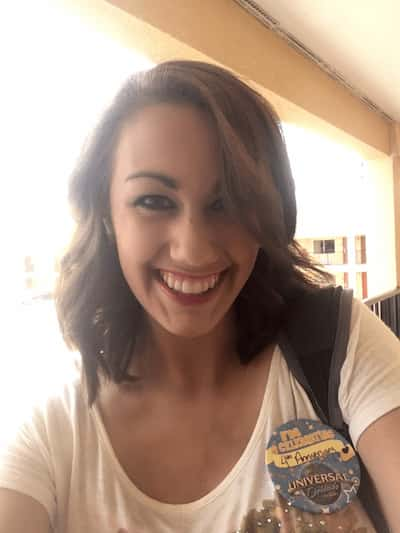
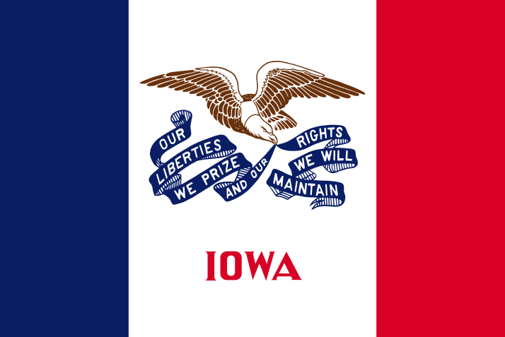

Emily Bennion
About Me
Hello! I'm Emily Bennion. I live in the state of Iowa and have only lived here for 1 year. I am currently studying at BYU Pathway and am passionate about getting my education furthured. I am a mother of 4 kids and I enjoy spending time with them and my husband.

Iowa, United States

Iowa is known for its vast cornfields and its abundant farmland. Politically Iowa is notable for the Ioaw Caucuses, which are the first contests in the United States presidential elections.